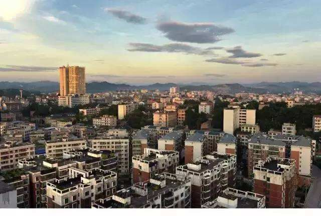
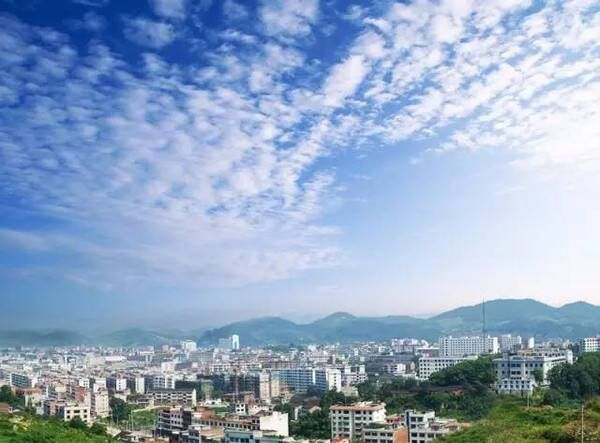

烟波浩渺的白马水库，亦名白马湖，宛如一颗晶莹闪亮的绿玛瑙，镶嵌在涟源市于新邵县之间
湄江风景区拥有一代帝陵，二湖秀水，三道岩门，四片绿洲，五座寺庙，六大飞瀑，七里峡谷，八面险景，百个奇洞，千块巧石，万树腊梅等景观
南粉合菜，是涟源市特色小吃，主要制作原料有红薯粉丝，干黄花，干笋尖，时令蔬菜等，因其色彩斑斓，鲜香糯软，合而不杂，深受人们的喜爱
涟源市第一中学是一所全日制公办的省级示范性普通高级中学。学校于1946年创建于国师旧址上，原名省立十五中，1952年更名为涟源一中

这里虽不及太湖的浩瀚，也比不上西湖，但是在乡人眼里，它却是最美的，对它产生了执着的偏爱
湄江风景区地质地貌为低山岩溶地貌，地质构造独特，如香炉山的“天弹待发”桥，藏君洞的“天然壁画”等均为世界稀有地质遗迹，具有美学观赏价值和科研科普价值
珠梅土鸡，涟源特色菜，选用涟源珠梅产的土鸡为主料，配以料酒，姜片，五花肉等，吃起来鸡肉味道非常细嫩，味道香辣
湖南省涟源市第一中学由著名教育家廖世承先生创办于1938年，原为国立师范学院，当年文学巨匠钱钟书于此任教，以国师为原型写就世界名著<围城》